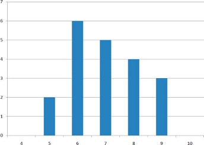
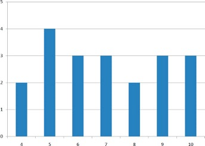

2 Statistics for Describing One Variable at a Time
2.1 Measures of Central Tendency1
2.1.1 Mean
The mean2 is the most common measure of central tendency. It is simply the sum of the numbers divided by the number of numbers. When using symbols and formulas to represent different statistics, we often distinguish between whether we are looking at a “sample” or a “population.” We’ll cover this distinction in more detail in our chapter about estimation. For now, think of a pollster who has conducted a survey with a sample of 1000 people. Even though only 1000 people responded to the survey, the pollster is actually interested in estimating the attitudes of a larger population—the entire public.
The symbol \(\mu\) is used for the mean of a population. The symbol \(\bar{X}\) is used for the mean of a sample. The formula for \(\mu\) is shown below:
\[ \mu = ΣX/N \]
where \(ΣX\) is the sum of all the numbers in the population and \(N\) is the number of numbers in the population.
The formula for \(\bar{X}\) is essentially identical:
\[ \bar{X} = ΣX/n \]
where \(ΣX\) is the sum of all the numbers in the sample and \(n\) is the number of numbers in the sample.
As an example, the mean of the numbers 1, 2, 3, 6, 8 is 20/5 = 4 regardless of whether the numbers constitute the entire population or just a sample from the population.
Table 2.1 shows the number of touchdown (TD) passes thrown by each of the 31 teams in the National Football League in the 2000 season. The mean number of touchdown passes thrown is 20.4516 as shown below.
\[ \begin{split} \mu = ΣX/N\ \\ = 634/31\ \\ = 20.4516 \end{split} \]
| 37 33 33 32 29 28 28 23 22 22 22 21 21 21 20 20 19 19 18 18 18 18 16 15 14 14 14 12 12 9 6 |
2.1.2 Median
The median is also a frequently used measure of central tendency. The median is the midpoint of a distribution: the same number of scores is above the median as below it. For the data in Table 2.1, there are 31 scores. The 16th highest score (which equals 20) is the median because there are 15 scores below the 16th score and 15 scores above the 16th score. The median can also be thought of as the 50th percentile.
2.1.2.1 Computation of the Median
When there is an odd number of numbers, the median is simply the middle number. For example, the median of 2, 4, and 7 is 4. When there is an even number of numbers, the median is the mean of the two middle numbers. Thus, the median of the numbers 2, 4, 7, 12 is (4+7)/2 = 5.5.
2.1.3 Mode
The mode is the most frequently occurring value. For the data in Table 2.1, the mode is 18 since more teams (4) had 18 touchdown passes than any other number of touchdown passes. With continuous data such as response time measured to many decimals, the frequency of each value is one since no two scores will be exactly the same (see discussion of continuous variables). Therefore the mode of continuous data is normally computed from a grouped frequency distribution. Table 2.2 shows a grouped frequency distribution for the target response time data. Since the interval with the highest frequency is 600-700, the mode is the middle of that interval (650).
| Range | Frequency | ||
|---|---|---|---|
| 500-600 600-700 700-800 800-900 900-1000 1000-1100 |
3 6 5 5 0 1 |
2.2 Comparing Measures of Central Tendency3
How do the various measures of central tendency compare with each other? For symmetric distributions, the mean and median are equal, as is the mode except in bimodal distributions. Differences among the measures occur with skewed distributions. Figure 2.1 shows the distribution of 642 scores on an introductory psychology test. The skew of this distribution can be described as slightly positive, meaning that there are more outliers on the positive (right) side of the distribution (see Section 5.1.4).
Measures of central tendency are shown in Table 2.3. Notice they do not differ greatly, with the exception that the mode is considerably lower than the other measures. When distributions have a positive skew, the mean is typically higher than the median, although it may not be in bimodal distributions. For these data, the mean of 91.58 is higher than the median of 90.
| Measure | Value | ||
|---|---|---|---|
| Mode Median Mean |
84.00 90.00 91.58 |
The distribution of baseball salaries (in 1994) shown in Figure 2.2 has a much more pronounced skew than the distribution in Figure 2.1.
Table 2.4 shows the measures of central tendency for these data. The large skew results in very different values for these measures. No single measure of central tendency is sufficient for data such as these. If you were asked the very general question: “So, what do baseball players make?” and answered with the mean of $1,183,000, you would not have told the whole story since only about one third of baseball players make that much. If you answered with the mode of $250,000 or the median of $500,000, you would not be giving any indication that some players make many millions of dollars. Fortunately, there is no need to summarize a distribution with a single number. When the various measures differ, our opinion is that you should report the mean and the median. Sometimes it is worth reporting the mode as well. In the media, the median is usually reported to summarize the center of skewed distributions. You will hear about median salaries and median prices of houses sold, etc. This is better than reporting only the mean, but it would be informative to hear more statistics.
| Measure | Value | |||
|---|---|---|---|---|
| Mode Median Mean |
250 500 1,183 |
2.3 Measures of Spread4
2.3.1 What is Variability?
Variability refers to how “spread out” a group of scores is. To see what we mean by spread out, consider graphs in Figure 2.3. These graphs represent the scores on two quizzes. The mean score for each quiz is 7.0. Despite the equality of means, you can see that the distributions are quite different. Specifically, the scores on Quiz 1 are more densely packed and those on Quiz 2 are more spread out. The differences among students were much greater on Quiz 2 than on Quiz 1.


The terms variability, spread, and dispersion are synonyms, and refer to how spread out a distribution is. Just as in the section on central tendency where we discussed measures of the center of a distribution of scores, in this section we will discuss measures of the variability of a distribution. There are four frequently used measures of variability: the range, interquartile range, variance, and standard deviation. In the next few paragraphs, we will look at each of these four measures of variability in more detail.
2.3.2 Range
The range is the simplest measure of variability to calculate, and one you have probably encountered many times in your life. The range is simply the highest score minus the lowest score. Let’s take a few examples. What is the range of the following group of numbers: 10, 2, 5, 6, 7, 3, 4? Well, the highest number is 10, and the lowest number is 2, so 10 - 2 = 8. The range is 8. Let’s take another example. Here’s a dataset with 10 numbers: 99, 45, 23, 67, 45, 91, 82, 78, 62, 51. What is the range? The highest number is 99 and the lowest number is 23, so 99 - 23 equals 76; the range is 76. Now consider the two quizzes shown in Figure 2.3. On Quiz 1, the lowest score is 5 and the highest score is 9. Therefore, the range is 4. The range on Quiz 2 was larger: the lowest score was 4 and the highest score was 10. Therefore the range is 6.
2.3.3 Interquartile Range
The interquartile range (IQR) is the range of the middle 50% of the scores in a distribution. It is computed as follows:
\[ IQR = \text{ 75th percentile } - \text{ 25th percentile } \]
For Quiz 1, the 75th percentile is 8 and the 25th percentile is 6. The interquartile range is therefore 2. For Quiz 2, which has greater spread, the 75th percentile is 9, the 25th percentile is 5, and the interquartile range is 4. Recall that in the discussion of box plots (Section 1.4.2), the 75th percentile was called the upper hinge and the 25th percentile was called the lower hinge. Thus, the interquartile range is neatly depicted by the box portion of a boxplot.
2.3.4 Variance
Variability can also be defined in terms of how close the scores in the distribution are to the middle of the distribution. Using the mean as the measure of the middle of the distribution, the variance is defined as the average squared difference of the scores from the mean. The data from Quiz 1 are shown in Table 2.5. The mean score is 7.0. Therefore, the column “Deviation from Mean” contains the score minus 7. The column “Squared Deviation” is simply the previous column squared.
| Scores | Deviation from Mean | Squared Deviation | ||||
|---|---|---|---|---|---|---|
| 9 | 2 | 4 | ||||
| 9 | 2 | 4 | ||||
| 9 | 2 | 4 | ||||
| 8 | 1 | 1 | ||||
| 8 | 1 | 1 | ||||
| 8 | 1 | 1 | ||||
| 8 | 1 | 1 | ||||
| 7 | 0 | 0 | ||||
| 7 | 0 | 0 | ||||
| 7 | 0 | 0 | ||||
| 7 | 0 | 0 | ||||
| 7 | 0 | 0 | ||||
| 6 | -1 | 1 | ||||
| 6 | -1 | 1 | ||||
| 6 | -1 | 1 | ||||
| 6 | -1 | 1 | ||||
| 6 | -1 | 1 | ||||
| 6 | -1 | 1 | ||||
| 5 | -2 | 4 | ||||
| 5 | -2 | 4 | ||||
| Means | ||||||
| 7 | 0 | 1.5 |
One thing that is important to notice is that the mean deviation from the mean is 0. This will always be the case. The mean of the squared deviations is 1.5. Therefore, the variance is 1.5. Analogous calculations with Quiz 2 show that its variance is 6.7. The formula for the variance is:
\[ \sigma^2=\frac{Σ(X-\mu)^2}{N} \]
where \(\sigma2\) is the variance, \(\mu\) is the mean, and \(N\) is the number of numbers. For Quiz 1, \(\mu\) = 7 and \(N\) = 20.
If the variance in a sample is used to estimate the variance in a population, then the previous formula underestimates the variance and the following formula should be used:
\[ s^2=\frac{Σ(X-\bar{X})^2}{n-1} \]
where \(s^2\) is the estimate of the variance and \(\bar{X}\) is the sample mean.
Note that \(\bar{X}\) is the mean of a sample taken from a population with a mean of \(\mu\). Since, in practice, the variance is usually computed in a sample, this formula is most often used. While it is not easy to succinctly explain why we divide by \(n-1\) rather than simply \(n\), the simulation “estimating variance”5 illustrates the bias that arises if we use \(n\) as the denominator in the formula.
Let’s look at a concrete example of calculating the sample variance. Assume the scores 1, 2, 4, and 5 were sampled from a larger population. To estimate the variance in the population you would compute \(s^2\) as follows:
\[ \bar{X} = (1 + 2 + 4 + 5)/4 = 12/4 = 3 \]
\[ s^2 = [(1-3)^2 + (2-3)^2 + (4-3)^2 + (5-3)^2]/(4-1) \\ = (4 + 1 + 1 + 4)/3 = 10/3 = 3.333 \]
2.3.5 Standard Deviation
The standard deviation is simply the square root of the variance. This makes the standard deviations of the two quiz distributions 1.225 and 2.588. We can interpret the standard deviation of X as approximating the typical distance between a given value of X and the mean of X. For example, suppose I tell you about a prison where the prisoners have a mean age of 42 years with a standard deviation of 8 years. If I randomly select one prisoner and ask you to guess their age, you should probably guess 42 since I’ve told you that is the mean. But even though 42 is your best guess, you can expect your guess to be off by about 8 years since the standard deviation is 8 (meaning the typical distance between a random prisoner’s age and the mean age is approximately 8). You can’t say ahead of time which direction your guess is likely to be off (guessing too old versus too young), just that you are likely to miss the reality for a randomly-selected individual by about 8 years on a typical guess (though any one guess may happen to be closer or further than 8 years).
2.4 Transforming Variables6
Often it is necessary to transform data from one measurement scale to another. For example, you might want to convert height measured in feet to height measured in inches. Table 2.6 shows the heights of four people measured in both feet and inches. To transform feet to inches, you simply multiply by 12. Similarly, to transform inches to feet, you divide by 12.
| Feet | Inches | |||
|---|---|---|---|---|
| 5.00 6.25 5.50 5.75 |
60 75 66 69 |
Some conversions require that you multiply by a number and then add a second number. A good example of this is the transformation between degrees Centigrade and degrees Fahrenheit. Table 2.7 shows the temperatures of 5 US cities in the early afternoon of November 16, 2002.
| City | Degrees Fahrenheit | Degrees Centigrade | ||||
|---|---|---|---|---|---|---|
| Houston Chicago Minneapolis Miami Phoenix |
54 37 31 78 70 |
12.22 2.78 -0.56 25.56 21.11 |
The formula to transform Centigrade to Fahrenheit is:
\[ F = 1.8C + 32 \]
The formula for converting from Fahrenheit to Centigrade is
\[ C = 0.5556F - 17.778 \]
The transformation consists of multiplying by a constant and then adding a second constant. For the conversion from Centigrade to Fahrenheit, the first constant is 1.8 and the second is 32.
Figure 2.4 shows a plot of degrees Centigrade as a function of degrees Fahrenheit. Notice that the points form a straight line. This will always be the case if the transformation from one scale to another consists of multiplying by one constant and then adding a second constant. Such transformations are therefore called linear transformations.
2.4.1 Standardization (Z Scores)
So far, we’ve discussed transformations that are probably familiar to you. A type of transformation that may be new to you is standardization or creating \(Z\) scores. A value from any distribution can be transformed into a \(Z\) score using the following formula:
\[ Z = \frac{(X - \mu)}{\sigma} \]
where \(Z\) is the new value, \(X\) is the value on the original distribution, \(\mu\) is the mean of the original distribution, and \(\sigma\) is the standard deviation of the original distribution.
As a simple application, suppose you want the \(Z\) score for a value of 26 taken from a distribution with a mean of 50 and a standard deviation of 10. Applying the formula, we obtain:
\[ Z = (26 - 50)/10 = -2.4 \]
If all the values in a distribution are transformed to \(Z\) scores, then the new distribution will have a mean of 0 and a standard deviation of 1. This process of transforming a distribution to one with a mean of 0 and a standard deviation of 1 is called standardizing the distribution. Sometimes it will be easier to work with a standardized version of a variable.
2.4.2 Log Transformations7
Sometimes it is also useful to use transformations that are not linear. For example, the log transformation can be used to make highly skewed distributions less skewed. This can be valuable both for making patterns in the data more interpretable and for helping to meet the assumptions of inferential statistics (see Chapter 4).
Figure 2.5 shows an example of how a log transformation can make patterns more visible. Both graphs plot the brain weight of animals as a function of their body weight. The raw weights are shown in the upper panel; the log-transformed weights are plotted in the lower panel.
It is hard to discern a pattern in the upper panel whereas the strong relationship is shown clearly in the lower panel.
This section is adapted from David M. Lane. “Measures of Central Tendency.” Online Statistics Education: A Multimedia Course of Study. http://onlinestatbook.com/2/summarizing_distributions/measures.html↩︎
More specifically, the arithmetic mean is the most common measure of central tendency. Although the arithmetic mean is not the only “mean” (there is also a geometric mean), it is by far the most commonly used. Therefore, if the term “mean” is used without specifying whether it is the arithmetic mean, the geometric mean, or some other mean, it is assumed to refer to the arithmetic mean.↩︎
This section is adapted from David M. Lane. “Comparing Measures of Central Tendency.” Online Statistics Education: A Multimedia Course of Study. http://onlinestatbook.com/2/summarizing_distributions/comparing_measures.html↩︎
This section is adapted from David M. Lane. “Measures of Variability.” Online Statistics Education: A Multimedia Course of Study. http://onlinestatbook.com/2/summarizing_distributions/variability.html↩︎
https://onlinestatbook.com/2/summarizing_distributions/variance_est.html↩︎
The initial part of this section is adapted from David M. Lane. “Linear Transformations.” Online Statistics Education: A Multimedia Course of Study. http://onlinestatbook.com/2/introduction/linear_transforms.html. There is also material adapted from David M. Lane. “Standard Normal Distribution.” Online Statistics Education: A Multimedia Course of Study. http://onlinestatbook.com/2/normal_distribution/standard_normal.html.↩︎
This subsection is adapted from David M. Lane. “Log Transformations.” Online Statistics Education: A Multimedia Course of Study. http://onlinestatbook.com/2/transformations/log.html↩︎